조경산업기사 (2018-04-28 기출문제)
1과목: 조경계획 및 설계
1. 마당 중앙에는 수반형의 둥근 분수대를 세웠고, 사방 주위에는 관목이나 초화류를 식재한 정형식정원이 있는 곳은?
- 덕수궁 석조전
- 창덕궁 주합루
- 경복궁 교태전
- 경복궁 향원정
(정답률: 73%)

2. 분구원(分區園)을 제창한 사람은?
- 시레버(Schreber)
- 하워드(E. Howard)
- 루드비히 레서(L. Lesser)
- 존 러스킨(J. Ruskin)
(정답률: 66%)
3. 토피어리(topiary)의 역사적 유래가 시작된 나라는?
- 고대 서부아시아
- 로마
- 인도
- 프랑스
(정답률: 72%)
4. 태호석(太湖石)에 대한 설명으로 거리가 먼 것은?
- 한나라 때 태호석의 이용이 성행하였다.
- 석가산 수법의 재료나 경석으로 사용되었다.
- 태호의 물속에서 채집하여 정원석으로 사용하였다.
- 북방지역은 화석강이라는 운반선으로 운하를 통해 운반하였다.
(정답률: 75%)
5. 전라남도 담양군 남면에 있는 양산보가 조성한 정원은?
- 선교장 정원
- 다산초당
- 소쇄원
- 부용동정원
(정답률: 89%)
6. 조선시대 아미산원에 대한 설명으로 옳지 않은 것은?
- 계단식으로 다듬어 놓은 화계를 이용한 정원 공간이다.
- 화목사이로 괴석과 세심석이 놓여 있다.
- 창덕궁 후원으로 사적인 성격의 공간이다.
- 온돌의 굴뚝을 화계 위로 뽑아 점경물로 삼았다.
(정답률: 72%)
7. 일본의 평안(헤이안)시대 나타난 침전조(寢殿造) 정원양식의 전형을 보여주는 대표적인 사례로 꼽을 수 있는 것은?
- 계리궁
- 동삼조전
- 삼보원
- 이조성
(정답률: 55%)
8. 고대 로마 폼페이 주택의 제1중정으로써 바닥이 돌로 포장되어 있었던 중정은?
- 아트리움
- 페리스틸리움
- 지스터스
- 파티오
(정답률: 77%)
9. 보행자도로와 차도를 동일한 공간에 설치하고 보행자의 안전성을 향상하는 동시에 주거환경을 개선하기 위하여 차량통행을 억제하는 여러 가지 기법을 도입하는 방식은?
- 보차혼용방식
- 보차병행방식
- 보차공존방식
- 보차분리방식
(정답률: 64%)
10. 옥상정원에 관한 설명 중 틀린 것은?
- 건물전체의 건축구조설계 등 타분야와 상호연관성을 고려한다.
- 하중을 줄이기 위하여 경량골재 등 가벼운 재료를 사용하는 것이 바람직하다.
- 이용의 측면에서 볼 때 프라이버시 보호가 설계의 중점 사항이다.
- 옥상은 태양 복사열을 잘 받고 미기후가 수목의 생장에 유리한 조건을 갖는다.
(정답률: 63%)
11. 생물다양성관리계약 체결 가능 지역으로 명시되지 않은 지역은?
- 멸종위기 야생생물의 보호를 위하여 필요한 지역
- 생물다양성의 증진이 필요한 지역
- 생물다양성의 복구가 필요한 지역
- 생물다양성이 독특하거나 우수한 지역
(정답률: 57%)
12. 경관의 우세요소(A), 우세원칙(B), 변화요인(C)을 순서대로 짝지은 것 중 틀린 것은?
- A : 형태, B : 집중, C : 규모
- A : 색채, B : 대조, C : 광선(light)
- A : 선, B : 축, C : 거리
- A : 질감, B : 방향, C : 연속성
(정답률: 63%)
13. 시점(A)에서 포장면(P)을 지각할 때 공간적 깊이 감을 가장 잘 줄 수 있는 포장 패턴은?
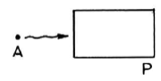
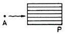
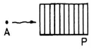
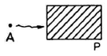
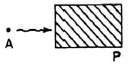
(정답률: 78%)
14. 행태 조사 방법 중 물리적 흔적(physical traces)의 관찰 방법으로 부적합한 것은?
- 일정 장소의 의자배치, 낙서, 잔디마모 등의 물리적 흔적을 관찰하는 것이다.
- 연구하고자 하는 인간행태에 영향을 미치지 않는다.
- 일반적으로 정보를 얻는데 시간이 많이 걸려 비용이 많이 든다.
- 대부분의 물리적 흔적은 비교적 장시간 변형되지 않으므로 반복적인 관찰이 가능하다.
(정답률: 61%)
15. 먼셀(A.H.Munsell)의 표색계(表色系)를 설명한 것 중 옳은 것은?
- 주요 5색은 R, Y, G, B, P 이다
- 채도 단계에서 빨강은 8단계이고, 녹색은 14단계이다.
- 명도축에는 1에서 14까지 번호가 붙여지고 있다.
- 헤링(E. Hering)의 4원색설을 기본으로 하고 있다.
(정답률: 76%)
16. 설계시 활용되는 “척도”의 종류에 해당되지 않는 것은?
- 배척
- 축척
- 현척
- 외척
(정답률: 69%)
17. 현대 디자인용 척도인 모듈러(Modulor)의 확립자는?
- 라이트 (Wright)
- 그로피우스 (Gropius)
- 르 꼬르뷔제 (Le Corbusier)
- 미스반델로에 (Mies van der Rohe)
(정답률: 79%)
18. 다음 중 그늘시렁(파골라)의 배치, 형태 및 규격의 설명으로 틀린 것은?
- 태양의 고도 및 방위각을 고려하여 부재의 규격을 결정하며, 해가림 덮개의 투영 밀폐도는 50%를 기준으로 한다.
- 공간규모와 이용자의 시각적 반응을 고려하여 규격을 결정하되 일반적으로 높이에 비해 길이가 길도록 한다.
- 의자를 설치할 수 있으며, 의자는 하지의 12~14시를 기준으로 사람의 앉은 목 높이 이상 광선이 비추지 않도록 배치한다.
- 조형성이 뛰어난 그늘시렁은 시각적으로 넓게 조망할 수 있는 곳이나 통경선(vista)이 끝나는 곳에 초점요소로서 배치할 수 있다.
(정답률: 74%)
19. 일반적으로 어느 색이 다른 색의 영향을 받아 단독으로 볼 때와는 달라져 보이는 현상을 무엇이라 하는가?
- 색의 조화
- 색의 대비
- 색의 잔상
- 푸르킨예 현상
(정답률: 62%)
20. 그림과 같이 어떤 물체를 제 3각법으로 투상한 투상도의 입체도로 가장 적합한 것은?
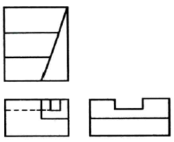
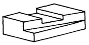
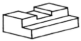
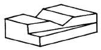
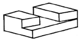
(정답률: 77%)
2과목: 조경식재
21. 잎보다 꽃이 먼저 피는 식물이 아닌 것은?
- 진달래
- 복사나무
- 모과나무
- 박태기나무
(정답률: 67%)
22. 다음은 어떤 식물에 대한 설명인가?
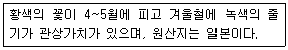
- 야광나무 (Malus baccata Borkh)
- 황매화 (Kerria japonica DC)
- 조팝나무 (Spiraea prunifolia f. simpliciflora Nakai)
- 쉬땅나무 (Sorbaria sorbifolia var. stellipila Maxim)
(정답률: 79%)
23. 장미과(科)의 벚나무속(屬)에 해당되지 않은 것은?
- 매실나무
- 살구나무
- 자두나무
- 모과나무
(정답률: 78%)
24. 벽오동의 분류군으로 맞는 것은?
- 피나무과(Tilliacae)
- 차나무과(Theaceae)
- 소태나무과(Simaroubaceae)
- 벽오동과(Sterculiaceae)
(정답률: 89%)
25. 고속도로 중앙분리대의 식재방식 중 랜덤식 식재법은?
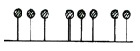
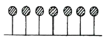
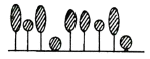
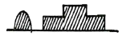
(정답률: 87%)
26. 수목을 식재한 후 지주목 설치의 가장 중요한 목적은?
- 지주목의 설치 그 자체가 관상의 주 대상이 된다.
- 철사로 설치함이 지주목의 기능으로서 효과가 가장 크다.
- 바람에 의한 피해를 줄이고 뿌리의 활착을 돕는 역할을 한다.
- 지주목은 가급적 가장 저렴한 재료를 이용하므로 경제상 유리하다.
(정답률: 89%)
27. 선화후엽(先花後葉) 식물 중 꽃은 황색이고, 열매가 검은색으로 익는 식물은?
- 생강나무(Lindera obtusiloba)
- 미선나무(Abeliophyllum distichum)
- 왕벚나무(Prunus yedoensis)
- 진달래(Rhododendron mucronulatum)
(정답률: 75%)
28. 조경수목의 부분별 특성을 살펴보면 뿌리(根), 줄기(莖), 잎(葉)의 영양기관과 꽃, 열매, 씨 등의 생식기관으로 구성되어 있다. 겨울의 꽃눈(花芽)이 필봉(筆鋒)같다 하여 경관적 가치가 있는 수목은?
- 때죽나무
- 백목련
- 수수꽃다리
- 무궁화
(정답률: 82%)
29. 비탈면(斜面) 식재 수종 선정에 우선적으로 고려할 조건으로 가장 거리가 먼 것은?
- 열매에 향기가 있는 수종
- 척박토에 강한 수종
- 토양 고정력이 있는 수종
- 환경 적응성이 우수한 수종
(정답률: 87%)
30. 식물군락에 대한 설명으로 옳은 것은?
- 우점종은 군락에 공통적으로 나타나는 종
- 추이대는 두 개 이상의 이질적인 군집사이에서 보이는 이행부
- 극상은 나지에 처음 들어오는 식물들의 외부 형태를 말함
- 1차 천이는 번식기관이 남아 있는 장소에서의 천이
(정답률: 70%)
31. 방화용 식재 수종으로만 구성된 것은?
- 녹나무, 삼나무
- 비자나무, 소나무
- 은목서, 구실잣밤나무
- 후피향나무, 아왜나무
(정답률: 70%)
32. 잎의 질감(texture)이 가장 거친 수종으로만 구성된 것은?
- 칠엽수, 양버즘나무
- 편백, 화백
- 산철쭉, 삼나무
- 회양목, 꽝꽝나무
(정답률: 79%)
33. 일반적으로 천근성 수종 이식시 사용되는 뿌리분의 종류와 기준 깊이는? (단, 뿌리분의 지름을 A라고 가정 함)
- 접시분, A/3
- 보통분, A/2
- 조개분, A/3
- 접시분, A/2
(정답률: 63%)
34. 물푸레나무(Fraxinus rhynchophylla Hance)에 관한 설명이 틀린 것은?
- 낙엽활엽교목이다.
- 나무껍질은 세로로 갈라지고, 흰색의 가로 무뉘가 있다.
- 열매는 길이 2 ~ 4㎝ 되는 시과로서 날개는 피침형으로 9월에 익는다.
- 꽃은 암수한그루로만 존재하며 3월 중 ~ 4월 초에 핀다.
(정답률: 63%)
35. 실내조경의 식물 선정에 있어서 가장 거리가 먼 것은?
- 실내에 식재될 수목은 낙엽현상장지를 위해 반그늘에서 약 2개월 전 식재 적응기간을 둔다.
- 실내조경에는 아열대성과 난온대성 관엽식물이 잘 자랄 수 있으므로 많이 사용되고 있다.
- 실내조경에는 추위에 강한 한대성 침엽수가 적당하다.
- 실내에서는 광 조건이 제한되므로 양수보다 음수를 선택하는 것이 좋다.
(정답률: 86%)
36. 다음( )안에 공통으로 들어갈 매립지 복원 공법은?
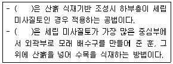
- 성토법
- 사공법
- 사토객토법
- 사구법
(정답률: 70%)
37. 종합경기장에 식재계획을 할 경우 주차장에 심어야 할 가장 적합한 녹음 수종으로만 짝지어진 것은?
- 느티나무, 이팝나무
- 주목, 비자나무
- 회양목, 식나무
- 팔손이나무, 녹나무
(정답률: 77%)
38. 돈나무의 학명으로 맞는 것은?
- Pittosporum tobira
- Chaenomeles speciosa
- Lespedeza maximowiczii
- Rhus javanica
(정답률: 68%)
39. 식물의 생태적 천이에 관한 설명으로 틀린 것은?
- 질서 있게 변화하는 진화과정으로 예측이 가능하다
- 식물종다양성은 천이 후기단계에 최대화되는 경향이 있다.
- 천이는 초본식물 및 외래식물의 침입으로부터 시작된다.
- 식물군집이 성숙되어 안정된 상태를 이룰 때 극상에 도달하게 된다.
(정답률: 55%)
40. 꽃 색깔이 다른 수종은?
- 채진목(Amelanchier asiarica Endl. Ex Walp.)
- 함박꽃나무(Magnolia sieboldii K.Koch)
- 옥매(Prunus glandulosa for. Albiplena Koehne)
- 모과나무(Chaenomeles sinensis Koehne)
(정답률: 57%)
3과목: 조경시공
41. 건설재료로서 목재의 특징이 옳은 것은?
- 열, 음, 전기 등의 전도성이 큰 전도체이다.
- 흡수 및 흡수성이 작으나 신축변형이 크다.
- 종류가 다양하고 외관이 아름답다.
- 비중에 비해 압축강도, 인장강도가 작으며 건축물의 자중이 크다.
(정답률: 73%)
42. 강의 일반적인 성질로 옳지 않은 것은?
- 비례한계점까지는 응력도와 변형도는 비례한다.
- 비례한계점까지는 후크(Hook)의 법칙이 성립된다.
- 탄성계수(영계수)는 변형도를 응력도로 나눈 값이다.
- 탄성계수는 일정한 정수로 나타내며 금속의 기계적 성질을 나타내는 중요한 자료이다.
(정답률: 47%)
43. 30m의 테이프가 표준자보다 1㎝ 짧다고 할 때 이 테이프로 측정한 300m의 길이는 얼마인가?
- 289.9 m
- 299.9 m
- 300.1 m
- 300.01m
(정답률: 48%)
44. 다음 중 평판측량 관련 설명으로 틀린 것은?
- 평판의 세우기는 정준, 구심, 표정의 3조건을 만족시켜야 한다.
- 측량 구역이 넓고 장애물이 있을 때는 후방교회법으로 하는 것이 좋다.
- 대표적인 평판측량 방법에는 방사법, 전진법, 교회법이 있다.
- 측방교회법이라 함은 시준이 잘되는 여러 목표물을 미리 정한 후 이 점들을 시준하여 다른점을 구하는 방법이다.
(정답률: 72%)
45. 콘크리트의 중성화와 가장 관계가 깊은 것은?
- 산소
- 질소
- 염분
- 이산화탄소
(정답률: 55%)
46. 다음 표의 점토질과 사질지반의 비교 내용 중 옳은 것은?
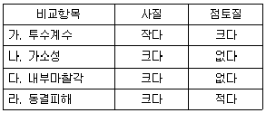
- 가
- 나
- 다
- 라
(정답률: 64%)
47. 다음 중 건설표준품셈의 조경공사의 유지관리를 위한 “일반전정” 관련 설명으로 틀린것은?
- 본 품은 준비, 소운반, 전정, 뒷정리를 포함한다
- 전정 후 외부 운반 및 폐기물처리비를 포함한다.
- 공구손료 및 경장비(전정기 등)의 기계정비는 인력품의 2.5%를 계상한다.
- 수목의 정상적인 생육장애요인의 제거 및 외관적인 수형을 다듬기 위해 실시하는 전정 작업을 기준한 품이다.
(정답률: 62%)
48. 공원 등에 사용되는 우수의 배수관에 관한 설치 요령 중 옳지 않은 것은?
- 이상적인 유속은 1.0 ~ 1.8m/sec 정도로 한다.
- 일반적으로 동결심도 이하의 깊이로 매설하는 것이 원칙이다.
- 관의 굵기는 계획 배수량을 정해진 유속으로 흘려보낼 수 있도록 정한다.
- 평탄지에서는 유속을 될 수 있는 한 급구배로 하여 관의 굵기를 정한다.
(정답률: 71%)
49. 「석재판붙임용재(부정형돌)」의 할증률은?
- 3%
- 5%
- 10%
- 30%
(정답률: 67%)
50. 다음 공정표에 관한 설명으로 틀린 것은?
- 좌표식 공정표는 예정공정에 쉽게 대비할 수 있는 장점이 있다.
- 네트워크 공정표는 각 공종간의 관계를 명확하게 하여 보다 세심한 관리가 가능하다.
- 막대공정표는 막대그래프를 이용하여 작업의 특정시점과 기간을 표시하여 공종별 공사일정을 파악하기가 쉽다.
- 네트워크의 주공정선(crtical path)은 전체 공사과정 중 가장 짧은 일정이 소요되는 과정으로 전체 공사의 소요기간을 산정할 수 있다.
(정답률: 68%)
51. 다음과 같은 특징을 갖는 합성수지는?
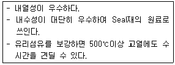
- 에폭시 수지
- 실리콘 수지
- 페놀 수지
- 멜라민 수지
(정답률: 73%)
52. 왕벚나무 100주를 기계시공으로 식재하는데 필요한 노무비는 얼마인가?
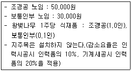
- 4,240,000 원
- 4,770,000 원
- 5,300,000 원
- 6,400,000 원
(정답률: 46%)
53. 목재의 변재와 심재에 대한 설명으로 맞는 것은?
- 변재는 심재에 비해 건조수축이 크다.
- 변재가 심재에 비해 강도가 높다.
- 수심에 가까운 부위가 변재이다.
- 심재는 수액의 수송 및 양분을 저장하는 부분이다.
(정답률: 61%)
54. 잔디 운동장 정지작업 중 경사도의 표준으로 적당한 것은?
- 1 ~ 2%
- 3 ~ 4%
- 5 ~ 6%
- 7 ~ 10%
(정답률: 65%)
55. 보도를 포장하려고 할 때 지반의 지지력 중 가장 높은 것은?
- 점질토
- 사질토
- 잡석층
- 자갈 섞인 흙
(정답률: 66%)
56. 시공 장비의 주요 사용 용도별 분류 중 “정지 또는 배토”를 위한 것은?
- 콤펙트
- 불도저
- 전압식 롤러
- 쇼벨
(정답률: 62%)
57. 콘크리트 타설 작업 시 발생하는 블리딩(Bleeding) 현상의 설명으로 옳은 것은?
- 굳지 않는 상태에서 시멘트 입자의 점성에 의한 재료분리에 저항하는 성질
- 시멘트 입자의 비율이 높아 점성이 증가하므로 타설 작업에 지장을 초래하는 현상
- 시멘트의 화학적 작용으로 인한 골재의 혼합 및 타설 작업에 지장을 초래하는 현상
- 굳지 않은 상태에서 무거운 골재나 시멘트는 침하하고 비교적 가벼운 물이나 미세한 물질 등이 상승하는 현상
(정답률: 69%)
58. 다음 그림과 같은 비탈면녹화 공법의 명칭은?
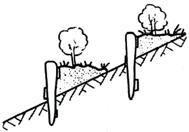
- 편책공
- 근지공
- 식생반공
- 종자뿜어붙이기
(정답률: 66%)
59. 공사감독자가 공사의 일시중지를 지시할 수 있는 경우에 해당되지 않는 것은?
- 수급인과 건축주로부터 공사대금의 선급금을 50% 미만으로 받은 경우
- 공사감독자나 감리원의 정당한 지시에 불응할 경우
- 기후조건 또는 천재지변으로 인해 부실시공이 우려될 경우
- 공사 종사원의 안전을 위하여 필요하다고 인정될 경우
(정답률: 73%)
60. 목재의 CCA 방부제는 유해성으로 인해 산업 현장에서 사용을 금지하고 있는데, 그 구성 성분의 역할로 적합하지 않은 것은?
- As : 방충성(防蟲性)
- Cr : 정착성(定着性)
- Cu : 방부성(防腐性)
- Al : 지속성(指續性)
(정답률: 56%)
4과목: 조경관리
61. 공원관리에 긍정적인 주민참가 효과를 설명하고 있는 것은?
- 생태교육 효과를 높인다.
- 공원에 대한 애착심을 높인다.
- 이용자를 제한할 수 있다.
- 반달리즘을 높인다.
(정답률: 77%)
62. 목재 유희시설물을 보수 할 때 방부, 방충효과를 알아보고자 함수율을 계산하면 얼마인가?
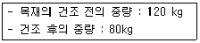
- 60%
- 50%
- 30%
- 20%
(정답률: 66%)
63. 다음 중에서 천적류에 가장 큰 영향을 미치는 살충제의 종류는?
- 유인제
- 접촉독제
- 기피제
- 불임제
(정답률: 68%)
64. 비탈면보호공의 적용은 현지실정에 맞추어 결정하는데, 주로 토양이나 풍화토(風化土) 등 붕괴우려가 적은 비탈면에 적합한 공법은?
- 배수공(排水工)
- 식생공(植生工)
- 낙석방지공(落石防止工)
- 구조물(構造物)에 의한 보호공(保護工)
(정답률: 66%)
65. 토양입자의 침강속도를 측정하여 토양의 입경을 구분 할 때 이용되는 Stokes식 내의 독립 변수 중 침강속도에 영향을 주는 인자로 고려되지 않는 것은?
- 물의 점성계수
- 물의 밀도
- 입자의 반경
- 입자의 형태
(정답률: 52%)
66. 교목 500주가 심어진 공원에 시비를 하고자 한다. 연 평균 수목 시비율을 20%로 할때 다음 표를 참조하여 시비를 위한 당해 연도(1년 간) 인건비를 산출하면 얼마인가?
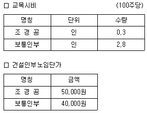
- 127,000원
- 279,000원
- 635,000원
- 1,270,000원
(정답률: 49%)
67. 운영관리계획 중 양적인 변화로 관리계획에 필요한 것은?
- 군식지의 생태적 조건 변화에 따른 갱신
- 귀화 식물의 증대
- 야간조명으로 인한 일장효과의 증대
- 지표면의 폐쇄로 토양 조건 약화
(정답률: 45%)
68. 백호우의 장비 규격 표시 방법으로 옳은 것은?
- 차체의 길이(m)
- 차체의 무게(ton)
- 표준 견인력(ton)
- 표준버킷 용량(m3)
(정답률: 73%)
69. 병 발생의 정도를 결정하는 요인으로 가장 거리가 먼 것은?
- 환경조건
- 병원체의 병원성
- 식물의 크기
- 기주식물의 감수성
(정답률: 74%)
70. 토양개량제 중 유기질 재료(organic matter)로 쓰이지 않는 것은?
- 왕모래
- 피트(Peat)
- 짚
- 퇴비
(정답률: 83%)
71. 조경석을 옮기거나 설치하기 위해 이용되는 이음매가 있는 권상용 와이어로프의 사용금지 규정이다. ( )안에 알맞은 수치는?
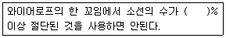
- 5
- 7
- 10
- 15
(정답률: 59%)
72. 솔나방의 생태에 관한 설명으로 옳지 않은 것은?
- 연 1회 발생한다.
- 유충으로 월동한다.
- 성충의 우화기간은 7월 하순 ~ 8월 중순이다.
- 소나무껍질 틈에 알을 덩어리로 낳는다.
(정답률: 53%)
73. 도로변 녹지의 관리계획 일정을 세우고자 할 때 잔디 보식의 최적기는?
- 4월
- 7월
- 8월
- 11월
(정답률: 71%)
74. 식물 관리비의 계산 공식으로 맞는 것은?
- 식물의 종류 × 작업율 × 작업회수 × 작업단가
- 식물의 종류 × 작업율 × 작업회수 × 작업방법
- 식물의 수량 × 작업장소 × 작업회수 × 작업방법
- 식물의 수량 × 작업율 × 작업회수 × 작업단가
(정답률: 74%)
75. 저온에 의한 피해로 주로 열대나 아열대 식물에 발생하여 신진대사가 정지되고 세포질의 활성이 상실되는 생리기능의 장해를 일으켜 고사하는 것은?
- 한상(chilling injury)
- 상해(frost injury)
- 동해(freezing injury)
- 열사(sun scald)
(정답률: 59%)
76. 레크레이션 수용능력에 따른 관리방법 중 부지 관리 유형에 해당하는 것은?
- 이용강도의 제한
- 이용유도
- 이용자에게 정보 제공
- 정책강화
(정답률: 55%)
77. 다음 중 소나무 좀에 관한 설명으로 틀린 것은?
- 수세가 쇠약한 벌목, 고사목에 기생한다.
- 연 1회 발생하여, 유충으로 월동한다.
- 월동성충이 수피를 뚫고 들어가 산란한 알이 부화한 유충이 수피 밑을 식해한다.
- 생물학적 방제를 위해 기생성 천적인 좀벌류, 맵시벌류, 기생파리류 등을 보호한다.
(정답률: 51%)
78. 조경 작업용 도구와 능률에 대한 설명으로 옳지 않은 것은?
- 도구의 자루 길이가 너무 길면 정확한 작업이 어렵다.
- 도구의 날이 너무 날카로운 것은 부러지기 쉽다.
- 도구의 날은 날카로울수록 땅을 잘 파거나 나무를 잘 자를 수 있다.
- 도구의 날 끝 각도가 작을수록 자를 나무가 잘 빠개진다.
(정답률: 68%)
79. 시멘트 콘크리트 포장 관리에 관한 사항 중 옳지 않은 것은?
- 줄눈시공이 부적합하면 수축에 의해 균열이 발생한다.
- 배수시설이 불충분하면 노상이 연약해진다.
- 포장의 균열이 많은 경우 콘크리트로 덧씌우기 한다.
- 포장파손이 심한 경우 패칭공법으로 보수한다.
(정답률: 60%)
80. 잔디에 뗏밥주기를 실시하는 이유로 가장 거리가 먼 것은?
- 지하경과 토양의 분리를 막으며, 내한성을 증대시킨다.
- 잔디의 요철(凹凸) 부분을 평탄하게 하며, 잔디깎기를 용이하게 한다.
- 잔디 식새층의 증가로 답압에 의한 잔디 피해를 적게 한다.
- 새로운 지하경을 뗏밥 속에 묻고, 오래된 지하경의 생육을 촉진함으로써 병해충의 피해를 줄인다.
(정답률: 56%)